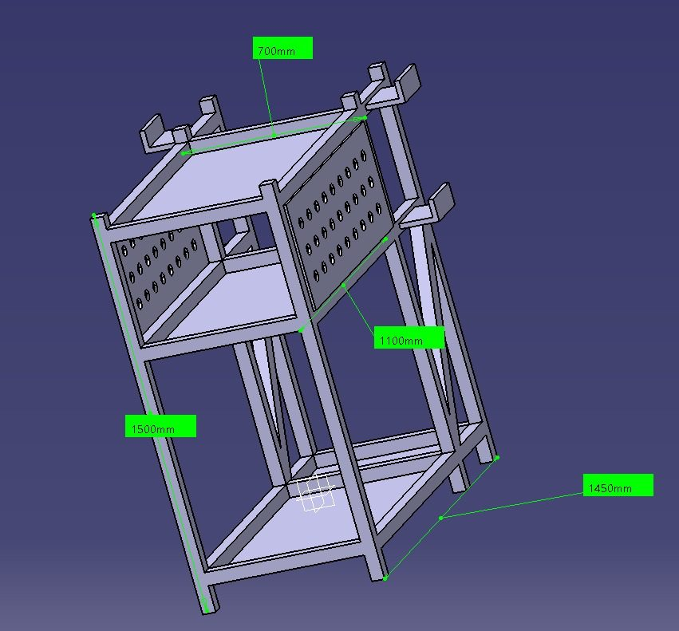

📦 Idee 1 – Kompaktrahmen mit Lamellenwand
| Merkmal | Beschreibung |
|---|---|
| Grundstruktur | Geschweißter Rahmen aus Vierkant-/Rechteckrohr, hochrechteckige Bauform |
| Seitenwand | Waagerechte Lamellen (Schlitzwand) – Aufnahme für Einhängehaken und Halterungen |
| Oberer Korb | Offener Rahmenkasten – Platz für Schweißgerät |
| Bodenplatte | Auskragend nach vorne – Standfläche für Gasflasche |
| Charakter | Sehr schlank, geringe Stellfläche, hoher Schwerpunkt |
Kritische Punkte: Kippgefahr durch hohen Schwerpunkt + schmale Basis
· nur eine Gasflasche vorgesehen (Anforderung: 2) · keine Rollen im Entwurf,
Mobilität nicht gelöst.
🛠️ Idee 2 – Werkstattwagen mit Lochblechwänden
Weiterentwickelter Entwurf: breitere Basis, mehrere Ablageebenen, umlaufende Lochblechwände und Kreuzverstrebungen zur Aussteifung.
CAD-Isometrie mit eingeblendeter Bemaßung

Idee 2 mit den im Modell vermaßten Hauptabmessungen: Breite 700, Aufbauhöhe 1100, Gesamthöhe 1500, Länge 1450 mm.
| Maß | Wert | Bedeutung |
|---|---|---|
| Breite | 700 mm | Breite der oberen Ablage / Wagenbreite |
| Höhe (Aufbau) | 1100 mm | Höhe bis Oberkante Lochblechwand |
| Gesamthöhe | 1500 mm | Gesamthöhe inkl. Ständer/Griffbereich |
| Länge / Tiefe | 1450 mm | Längsausdehnung des Untergestells |
| Baugruppe | Ausführung / Funktion |
|---|---|
| Untergestell | 4 Standfüße aus Rohrprofil, umlaufender Bodenrahmen mit Blecheinlage |
| Untere Ablage | Bodenplatte – Stellfläche für Gasflaschen / schwere Geräte (tiefer Schwerpunkt) |
| Mittlere Ablage | Zwischenboden für Schweißgerät bzw. Verbrauchsmaterial |
| Obere Ablage | Arbeits-/Abstellfläche in Griffhöhe |
| Lochblechwände | Umlaufend an drei Seiten – Aufnahme für Werkzeughaken (5S-Schattenbrett möglich) |
| Diagonalstreben | Kreuzverstrebung gegen Verwindung – deutlich höhere Steifigkeit als Idee 1 |
| Einhängehaken | Umgekehrte U-Profile oben – Aufnahme für Schlauchpakete, Massekabel, Brenner |
⚖️ Direktvergleich Idee 1 ↔ Idee 2
| Kriterium | Idee 1 (Kompaktrahmen) | Idee 2 (Werkstattwagen) |
|---|---|---|
| Standfläche | Klein / schmal | Groß (700 × 1450 mm) |
| Standsicherheit | ⭐⭐ Kippgefahr | ⭐⭐⭐⭐⭐ Breite Basis, tiefer Schwerpunkt |
| Steifigkeit | ⭐⭐⭐ Ohne Diagonalen | ⭐⭐⭐⭐⭐ Kreuzverstrebt |
| Ablageflächen | 1 Ebene + Bodenplatte | 3 Ebenen |
| Werkzeugaufnahme | Lamellenwand (1 Seite) | Lochblech (3 Seiten) + Haken |
| Gasflaschen | 1 Stück | 2 Stück möglich |
| 5S-Eignung | ⭐⭐⭐ Begrenzt | ⭐⭐⭐⭐⭐ Schattenbrett-fähig |
| Materialaufwand | 💰 Gering | 💰💰💰 Höher |
| Fertigungsaufwand | ⭐⭐ Einfach | ⭐⭐⭐⭐ Mehr Schweißnähte |
Zwischenfazit: Idee 2 erfüllt die Anforderungen (3 Geräte + 2 Gasflaschen,
5S, Standsicherheit) deutlich besser und wird als Vorzugsvariante weiterverfolgt.
Idee 1 dient als Referenz für eine schlanke Minimallösung.
❓ Offene Punkte zur Weiterbearbeitung
- MobilitätRollen (2 Lenk- + 2 Bockrollen) noch nicht konstruiert – Tragfähigkeit > 300 kg prüfen.
- HöhenverstellungAnforderung „höhenverstellbar“ im aktuellen Modell noch nicht umgesetzt.
- GasflaschensicherungKette / Bügel nach DGUV erforderlich.
- Länge 1450 mmfür einen mobilen Wagen sehr lang – Reduktion prüfen.
- ProfilquerschnitteWandstärken und Rohrmaße festlegen.
- LochbildRaster und Lochdurchmesser auf Standard-Werkzeughaken abstimmen.